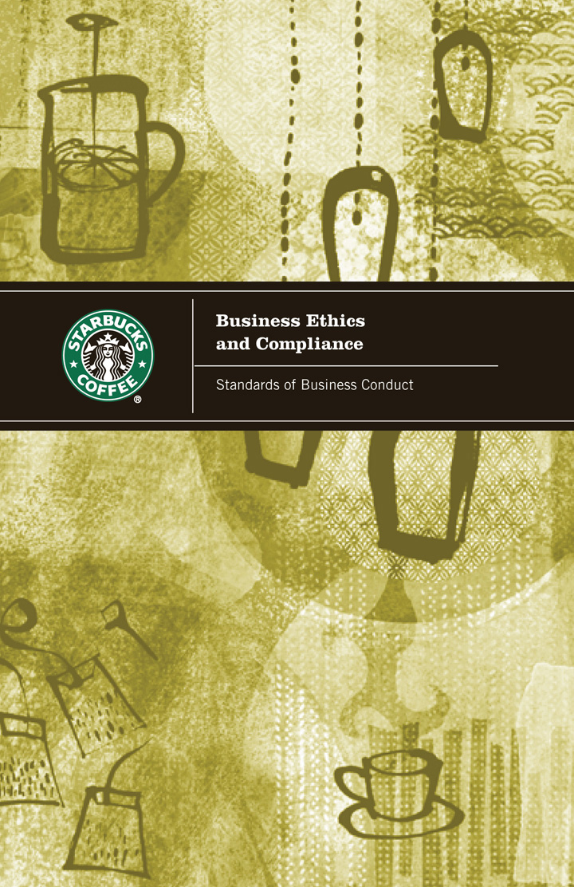
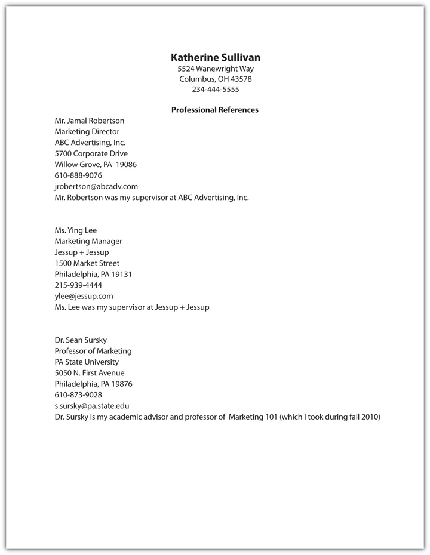

You met Paul Blake in Chapter 2 "The Power to Choose Your Path: Careers in Sales". With over twenty years of experience in selling, Paul has been in challenging situations when his ethics were at stake. He knows the importance of doing the right thing, even when it’s not the easy thing to do. Because your ethics may be put to the test at any time by your co-workers, customers, or even your boss, Paul shares his thoughts on ethics in selling.
Ride along with Paul as he discusses doing the right thing.
(click to see video)It seemed like a straightforward decision at the time—you could either pay ninety-nine cents per song on iTunes, or you could download for free from a peer-to-peer network or torrent service. After all, artists want people to enjoy their music, right? And besides, it’s not like Kanye West needs any more money. So you pointed your browser to ThePirateBay.org.
Of course, that isn’t the whole story. The MP3s you downloaded have value—that’s why you wanted them, right? And when you take something of value without paying the price, well, that’s theft. The fact that you’re unlikely to get caught (and it isn’t impossible; people are arrested, prosecuted, and ordered to pay massive judgments for providing or downloading music illegally) may make you feel safer, but if you are caught, you could pay from $750 to $150,000 per song.Elianne Friend, “Woman Fined to Tune of $1.9 Million for Illegal Downloads,” CNN.com, June 18, 2009, http://www.cnn.com/2009/CRIME/06/18/minnesota.music.download.fine/index.html (accessed February 13, 2010). Other variables can further complicate the situation. If you downloaded the MP3s at work, for example, you could lose your job. Acting unethically is wrong and can have enormous practical consequences for your life and your career.
EthicsMoral principles that define what is right and wrong. is moral principles—it is a system that defines right and wrong and provides a guiding philosophy for every decision you make. The Josephson Institute of Ethics describes ethical behavior well: “Ethics is about how we meet the challenge of doing the right thing when that will cost more than we want to pay. There are two aspects to ethics: The first involves the ability to discern right from wrong, good from evil, and propriety from impropriety. The second involves the commitment to do what is right, good, and proper. Ethics entails action; it is not just a topic to mull or debate.”John C. Maxwell, There’s No Such Thing As “Business” Ethics (New York: Center Street, 2003), 23–24. Is it right? Is it fair? Is it equitable? Is it honest? Is it good for people? These are all questions of ethics.Manual Velasquez, Claire Andre, Thomas Shanks, and Michael J. Meyer, “What Is Ethics?” Santa Clara University, http://www.scu.edu/ethics/practicing/decision/whatisethics.html (accessed August 31, 2009). Ethics is doing the right thing, even if it is difficult or is not to your advantage.[citation redacted per publisher request]. Carly Fiorina, former CEO of Hewlett-Packard, discusses the importance and impact of ethics on business.
Excerpt from Carly Fiorina’s Speech on Ethics
(click to see video)Your success starts with personal ethics.
Source: FORA.tv
Ethics comes into play in the decisions you make every day. Have you ever received too much money back when you paid for something in a store, didn’t get charged for something you ordered at a restaurant, or called in sick to work when you just wanted a day off?College Confidential, http://talk.collegeconfidential.com/california-institute-technology/427749-ethical-dilemma-question.html (accessed August 31, 2009). Each of these is an ethical dilemmaA situation in which options are presented which may be right or wrong.. You make your decision about which path to take based on your personal ethics; your actions reflect your own moral beliefs and moral conduct.Manual Velasquez, Claire Andre, Thomas Shanks, and Michael J. Meyer, “What Is Ethics?” Santa Clara University, http://www.scu.edu/ethics/practicing/decision/whatisethics.html (accessed August 31, 2009). Your ethics are developed as a result of your family, church, school, community, and other influences that help shape your personal beliefs—that which you believe to be right versus wrong.Manual Velasquez, Claire Andre, Thomas Shanks, and Michael J. Meyer, “Ethics and Virtue,” Santa Clara University, http://www.scu.edu/ethics/practicing/decision/ethicsandvirtue.html (accessed August 29, 2009). A good starting point for your personal ethics is the golden rule: “Do unto others as you would have them do unto you.” That is, treat people the way that you would like to be treated. You would like people to be honest with you, so be honest with others.
Your strong sense of personal ethics can help guide you in your decisions. You might be surprised to find yourself with an ethical dilemma about something that is second nature to you. For example, imagine that you’re taking a class (required for your major) that has an assignment of a twenty-page paper and you’ve been so busy with your classes, internship, and volunteer work that you really haven’t had the time to get started. You know you shouldn’t have waited so long and you’re really worried because the paper is due in only two days and you’ve never written a paper this long before. Now you have to decide what to do. You could knuckle down, go to the library, and visit the campus Writing Center, but you really don’t have the time to do all that and still write the entire twenty pages. You’ve heard about some people who have successfully bought papers from this one Web site. You’ve never done it before, but you are really desperate and out of time. “If I only do it this one time,” you think, “I’ll never do it again.”
But compromising your ethics even just once is a slippery slope. The idea is that one thing leads naturally to allowing another until you find yourself sliding rapidly downhill. Ethics is all about the art of navigating the slippery slope: you have to draw a line for yourself, decide what you will and won’t do—and then stick to it. If you don’t have a strong set of ethics, you have nothing to use as a guidepost when you are in a situation that challenges you morally. A highly developed set of personal ethics should guide your actions. The only way to develop a strong sense of ethics is to do what you believe in, to take actions consistent with your principles time and time again.
So if you buy the paper and get caught, you will not only fail the class, but you may also find yourself expelled from school. If you’re tempted to consider buying a paper, take a minute to read your school’s academic dishonesty policy, as it is most likely very clear about what is right and wrong in situations like this.
Academic Dishonesty Policy at the University of Nevada, Reno
Even if you get away with using a paper that is not your own for now, it’s always possible that you’ll be found out and humiliated even decades after the fact. Southern Illinois University (SIU) had three high-ranking officials—a university president and two chancellors—revealed as plagiarists in a two-year period.Margaret Soltan, “Southern Illinois University an Official Laughingstock,” Inside Higher Ed, August 30, 2007, http://www.insidehighered.com/blogs/university_diaries/southern_illinois_university_an_official_laughingstock (accessed February 18, 2010). Even more embarrassing, the committee formed to investigate the charges of plagiarism against Chancellor Walter Wendler developed a new plagiarism policy whose parts were plagiarized—specifically, it copied its academic dishonesty policy from Indiana University without citing that source.Wendy Weinhold, “SIU Accused of Copying Plagiarism Policy,” Daily Egyptian, January 29, 2009, http://web2.collegepublisher.com/se/daily-egyptian/siu-accused-of-copying-plagiarism-policy-1.1318397 (accessed February 18, 2010). SIU was made a laughingstock, and its reputation has suffered considerably. Academic dishonesty is not a gamble worth taking; though many students are tempted at some point, those who give in usually regret it.
If you rationalize your decisions by saying, “Everyone does it,” you should reconsider. Unethical behaviorActing in a way that is not responsible or deemed to be the standard of what is right, good, and fair. is not only what you believe to be right and fair, it is a reflection of your personal brand and what people can expect from you personally and professionally. Even celebrities such as Wesley Snipes, Willie Nelson, and Darryl Strawberry have fallen from grace in the eyes of the public and learned the hard way that unethical—and in their cases, illegal—behavior such as tax evasion can result in a prison term.Stefanie Fontenez, “Tax-Troubled Celebrities, Politicians, Outlaws,” CNN.com, April 15, 2008, http://www.cnn.com/2008/LIVING/wayoflife/04/15/famous.tax/index.html (accessed August 29, 2009). The consequences of unethical behavior can range from embarrassment to suspension, loss of job, or even jail time, depending on the act.
Eliot Spitzer, the governor of New York, admitted that he violated his personal ethics and those of his office when he resigned in March 2008 because of alleged involvement in a sex ring. Ironically, he built his reputation as the “sheriff of Wall Street” due to his efforts to crack down on corporate misdeeds.Danny Hakim, “Eliot Spitzer,” New York Times, Times Topics, August 31, 2009, http://topics.nytimes.com/topics/reference/timestopics/people/s/eliot_l_spitzer/index.html (accessed August 31, 2009). His disgrace was the topic of many conversations about ethics.
What Is Ethics?
(click to see video)This video includes interviews about ethics and perceptions of Eliot Spitzer and his actions.
Source: Steven R. Hoover
You have no doubt heard the expression “Do the right thing.” It is the essence of ethics: choosing to do the right thing when you have a choice of actions. Being ethical means you will do the right thing regardless of whether there are possible consequences—you treat other people well and behave morally for its own sake, not because you are afraid of the possible consequences. Simply put, people do the right thing because it is the right thing to do. Thomas Jefferson summed up ethics in a letter he wrote to Peter Carr in 1785: “Whenever you are to do a thing, though it can never be known but to yourself, ask yourself how you would act were all the world looking at you, and act accordingly.”Gerhard Gschwandtner, “Lies and Deception in Selling: How to Tell When Customers or Prospects Are Lying to You,” Selling Power 15, no. 9, http://www.sellingpower.com/content/article.php?a=4256 (accessed March 16, 2010).
Ethical decisions are not always easy to make, depending on the situation. There are some gray areas depending on how you approach a certain situation. According to Sharon Keane, associate director of marketing at the University of Notre Dame, people have different approaches, so there may be multiple solutions to each ethical dilemma,“An Education in Ethics,” Selling Power Sales Management eNewsletter, April 17, 2002, http://www.sellingpower.com/content/newsletter/issue.php?pc=197 (accessed March 16, 2010). and every situation may have multiple options. For example, if one of your best friends told you in confidence that he stole the questions to the final exam would you say nothing, use them, or report him? Certainly, using the questions would not be ethical, but your ethical dilemma doesn’t end there. Reporting him would be the right thing to do. But if you didn’t report him, would it be unethical? You might not consider that unethical, but what if you just didn’t say anything—is that still ethical? This is the gray area where your personal ethics come into play. Looking the other way doesn’t help him or you. While you might be concerned about jeopardizing your friendship, it would be a small price to pay compared with jeopardizing your personal ethics.
Ethics apply to businesses as well personal behavior. Business ethicsThe application of ethical behavior by a business or in a business environment. is the application of ethical behavior by a business or in a business environment. An ethical business not only abides by laws and appropriate regulations, it operates honestly, competes fairly, provides a reasonable environment for its employees, and creates partnerships with customers, vendors, and investors. In other words, it keeps the best interest of all stakeholdersAll parties that have a stake in an organization including employees, customers, investors, the community, and others. at the forefront of all decisions.[citation redacted per publisher request].
An ethical organization operates honestly and with fairness. Some characteristics of an ethical company include the following:
While ethical behavior may seem as if it is the normal course of business, it’s unfortunate that some business people and some businesses do not operate ethically. Enron, WorldCom, Tyco, HealthSouth, and Lehman Brothers among other companies, have been highlighted in the news during the past several years due to unethical behavior that resulted in corporate scandals and, in some cases, the conviction of senior executives and collapse of some companies. While business has never been immune from unethical behavior, it was the fall of Enron in 2001 that brought unethical business behavior on the part of senior executives to the forefront. Enron began as a traditional energy company in 1985. But when energy markets were deregulated (prices were determined based on the competition rather than being set by the government) in 1996, Enron grew rapidly. The company began to expand to areas such as Internet services and borrowed money to fund the new businesses. The debt made the company look less profitable, so the senior management created partnerships in order to keep the debt off the books. In other words, they created “paper companies” that held the debt, and they showed a completely different set of financial statements to shareholders (owners of the company) and the government (U.S. Securities Exchange Commission [SEC]). This accounting made Enron look extremely profitable—it appeared to have tripled its profit in two years. As a result, more people bought stock in the company. This lack of disclosure is against the law, as publicly traded companies are required to disclose accurate financial statements to shareholders and the SEC. There began to be speculation about the accuracy of Enron’s accounting, and on October 16, 2001, the company announced a loss of $638 million. On October 22 of that year, the SEC announced that Enron was under investigation. The stock price continued to fall, and the company was unable to repay its commitments to its shareholders. As a result of this unethical and illegal behavior on the part of senior management, the company filed for chapter 11 bankruptcy protection.NewsHour Extra, “What Happened to Enron?” Paul Solman, PBS, January 22, 2002, http://www.pbs.org/newshour/extra/features/jan-june02/enron_past.html (accessed December 6, 2009). The unethical (and illegal) behavior of the senior management team caused a ripple effect that resulted in many innocent people losing their money and their jobs. As a result of the Enron scandal, a new law named the Sarbanes-Oxley ActRegulation of corporate financial practices and protection for people who report violations. (for Senator Paul Sarbanes from Maryland and Representative Michael Oxley from Ohio) was enacted in 2002 that requires tighter financial reporting controls for publicly traded companies.SearchCIO, “Sarbanes-Oxley Act,” http://searchcio.techtarget.com/sDefinition/0,,sid182_gci920030,00.html (accessed December 6, 2009).
The epitome of unethical (and illegal) behavior was Bernard Madoff, who was convicted of running a $65 billion fraud scheme on his investors. For years, he reported extremely high returns on his clients’ investments, encouraging them to reinvest with even more money. All the time he was stealing from his clients and spending the money. He cheated many clients, including high-profile celebrities like actor Kevin Bacon and his wife Kyra Sedgewick and a charity of Steven Spielberg’s.“Bernie Madoff Ponzi Scheme: Victim List Grows,” Huffington Post, December 15, 2008, http://www.huffingtonpost.com/2008/12/15/bernie-madoff-ponzi-schem_n_151018.html (accessed December 6, 2009). He was arrested, tried, and sentenced to 150 years in jail, and his key employees were also sentenced to similar terms.Julie Creswell and Landon Thomas Jr., “The Talented Mr. Madoff,” New York Times, January 24, 2009, http://www.nytimes.com/2009/01/25/business/25bernie.html (accessed August 31, 2009).,Jack Healy and Diana B. Henriques, “It Was All Fake: Madoff Aide Details Scheme,” New York Times, August 12, 2009, http://dealbook.blogs.nytimes.com/2009/08/12/madoff-aide-reveals-details-of-ponzi-scheme/?scp=2&sq=madoff%20sentencing&st=cse (accessed August 31, 2009).
Not all behavior that is unethical is illegal. Companies frequently are faced with ethical dilemmas that are not necessarily illegal but are just as important to navigate. For example, if a travel company wants to attract a lot of new customers, it can honestly state the price of a trip to Disney World in its advertising and let customers decide if they want to purchase the trip. This would be ethical behavior. However, if the company advertises a free vacation in order to get customers to call, but the free vacation package includes a $500 booking fee, it is unethical. Or if an appliance store wants to get new customers by advertising a low-priced refrigerator, it is an ethical way to let customers know that the company has competitively priced appliances as well. However, if the store only has a higher-priced refrigerator in stock and tries to sell that one instead, it is unethical behavior.
Sometimes ethical behavior can be a matter of disclosure, as in the case of Enron, Bernie Madoff, or the examples above. Business ethics can also be challenged based on business practices. For example, in the 1990s Nike was accused of exploiting workers in third-world countries to manufacture their products. The low wages they were paying the workers made Nike’s profits higher.Aaron Bernstein, “Nike’s New Game Plan for Sweatshops,” BusinessWeek, September 20, 2004, http://www.businessweek.com/magazine/content/04_38/b3900011_mz001.htm (accessed December 6, 2009). While this is not illegal behavior—they were paying the workers—it was considered unethical because they were paying the workers less than what is reasonable. Another example of unethical behavior is not disclosing information. For example, if a car salesperson knows that a used car he is selling has been in an accident but says that it has not been involved in an accident, that is unethical. Bribing an executive, saying or promising things that are knowingly untrue, or treating employees unfairly are all examples of unethical behavior in business.
You may choose to shop at companies because of their business practices. For example, you might like The Body Shop because of its commitment to selling products that do not use animals for testing. This is a case of ethical behavior that is socially responsible. In fact, corporate social responsibility (CSR)Company actions that balance the interests of all stakeholders. is when companies operate in a way that balances the interests of all stakeholders including employees, customers, investors, vendors, the community, society, and any other parties that have a stake in the company. While corporate social responsibility may seem easy, it’s not always as easy as it looks. Keep in mind that in order to be socially responsible a company has to balance the social, economic, and environmental dimensions, which means generating a profit for investors while serving the best interest of all parties that have a stake in the operations of the company. When companies measure the impact of their performance along the three dimensions of social, economic, and environmental impact, it is called the triple bottom lineMeasurement of company performance along three dimensions—social, economic, and environmental.. To learn more about McDonald’s social responsibility, watch the following video.
McDonald’s Commitment to Social Responsibility
(click to see video)See how the triple bottom line is part of the company culture.
Source: McDonald’s Corporation
There are many companies that make a commitment to social responsibility and the triple bottom line.
Most “Accountable” Companies for Socially Responsible Practices
http://money.cnn.com/popups/2006/fortune/g500_accountability/index.html
The impact of ethical behavior by companies cannot be underestimated. It’s no surprise that companies that consistently demonstrate ethical behavior and social responsibility generate better results. In successful companies ethics is so integrated into the organization that it defines how every employee from CEO to the lowest-level employee behaves. Ethics is not a separate topic but is incorporated into company strategy. The company makes ethics part of every activity from strategic planning to operational execution.Jeremy Dann, “Business Ethics Integral to Corporate Strategy, Says Stanford’s Malhotra,” BNET, July 1, 2009, http://blogs.bnet.com/mba/?p=927&tag=content;col1 (accessed August 29, 2009). For example, Target has been committed to the triple bottom line even before it was in vogue when the company’s founder, George Draper Dayton, established a foundation to give back to the community. The company’s commitment has grown, and since 1946 it has donated 5 percent of its income every year. Target’s Corporate Responsibility Report is information that the company makes available to everyone on its Web site.Target, “Corporate Responsibility Report,” http://investors.target.com/phoenix.zhtml?c=65828&p=irol-govResponsibility (accessed September 1, 2009).
Target’s Corporate Responsibility Report
Target’s commitment to social responsibility is made public on the company’s Web site.
http://investors.target.com/phoenix.zhtml?c=65828&p=irol-govResponsibility
Target’s commitment to ethics and social responsibility are especially impressive given the current economic challenges. It is times like these that can challenge many companies that do not have this kind of ethical commitment. With pressure on short-term results, many companies set unrealistic goals and employees feel extreme pressure to meet them or face the possibility of losing their jobs. Professor Neil Malhotra of the Stanford Graduate School of Business calls this an “overemphasis on instant gratification.” In fact, he feels that is the root cause of the current economic crisis.Jeremy Dann, “Business Ethics integral to Corporate Strategy, Says Stanford’s Malhotra,” BNET, July 1, 2009, http://blogs.bnet.com/mba/?p=927&tag=content;col1 (accessed August 29, 2009). But business ethics, just like personal ethics, mean doing the right thing even when it is a difficult choice or doesn’t appear to be advantageous.
But ethical behavior and integrity are clearly linked to profitability. In a study of seventy-six Holiday Inn franchises around the country conducted by Tony Simons, associate professor in organization management at Cornell University and author of the book The Integrity Divided, Simons found that the behavior of the hotel manager was the “single most powerful driver of profit.”Heather Baldwin, “There’s a Price on Your Integrity,” Selling Power Sales Management eNewsletter, September 16, 2008, http://www.sellingpower.com/content/newsletter/issue.php?pc=867 (accessed March 16, 2010).
One of the most visible positions in any organization in terms of ethics is sales. That’s because it is the salesperson that comes in contact directly with the customer. What the salesperson says and does is a direct reflection of the organization and its ethics.
Consider this ethical dilemma if you were a real estate agent. You have just landed a fantastic listing: a home that in the hot neighborhood that will surely sell quickly and yield a nice commission for you. The seller tells you that the home inspector suspects there is insect damage to the siding of the house, but the seller says she has never had any problems. Also, the seller feels so strongly about not disclosing this information to prospective buyers that she said she would rather go with a different agent if you insist on disclosing the possible insect damage. What would you do?
In a situation like this, it’s best to remember that doing the right thing can be a hard choice and might not be advantageous to you. Although you really don’t want to lose this listing, the right thing to do is to disclose anything that affects the value or desirability of the home. Even if you think it might not be a major issue, it’s always best to err on the side of honesty and disclose the information.Buck Wargo, “5 Everyday Ethical Dilemmas,” Realtor, March 2007, http://www.realtor.org/archives/feat2200703?presentationtemplate=rmo-design/pt_articlepage_v1_print&presentationtemplateid=1b18c0004a12c9a4b7e1ffbdd1ec736f (accessed August 29, 2009). Either withholding or falsifying information is lying and therefore unethical.Gerhard Gschwandtner, “Lies and Deception in Selling: How to Tell When Customers or Prospects Are Lying to You,” Selling Power 15, no. 9, http://www.sellingpower.com/content/article.php?a=4256 (accessed March 16, 2010).
Imagine that you are a financial planner responsible for managing your clients assets. You make your income on commission, a percentage of the value of your clients’ portfolios; the more you increase his portfolio, the more money you make. One of your clients is a very conservative investor; right now you are not making much money from his account. You have an opportunity to sell him a high-return investment, but the risk is far greater than you think he would normally take. You think you can sell him on it if you leave out just a few details during your conversation. The investment will actually be good for him because he will get a significant return on his investment, and besides, you’re tired of spending your time on the phone with him and not making any money. This could be a win-win situation. Should you give him your pitch with a few factual omissions or just make the investment and tell him after the money starts rolling in? After all, he doesn’t look at his account every day.Mark P. Cussen, “Ethical Issues for Financial Advisors,” Investopedia, http://investopedia.com/printable.asp?a=/articles/financialcareers/08/ethics-for-advisors.asp (accessed August 29, 2009). What should you do?
Even though the result of the investment could be a good one, it is your obligation to provide full disclosure of the risk and let the customer make the investment decision. You should never make assumptions and decisions on behalf of your customers without their consent. If you are frustrated about your lack of income on the account, you might not be the best financial planner for him. You should have an honest conversation with him and perhaps suggest a colleague or other planner that might be a better fit for his investment strategy. Sometimes it’s better to part ways than to be tempted to behave unethically.
What if your employer asked you to do something that you are not comfortable doing? For example, if your employer asked you to complete the paperwork for a sale even if the sale hasn’t been made, what should you do? It’s best to say that you are not comfortable doing it; never compromise your personal ethics even for your employer. It’s also a good idea to see someone in the human resources department if you have any questions about the best way to handle a specific situation.
What if you were a salesperson for a textbook company and you are only $1,000 away from your $1 million sales goal. If you make your goal, you’ll earn a $10,000 bonus, money you’ve been counting on to put a down payment on your first house. But the deadline is only two days away, and none of your customers is ready to make a purchase. You really want the bonus, and you don’t want to wait until next year to earn it. Then you remember talking to one of the administrators, and she mentioned the need for donations. What if you made a $1,000 donation to the school. It would help the school during this challenging financial crisis and it would be more inclined to make a purchase quickly. After the donation, you would still have $9,000. This could be a good move for everyone. Would you make the donation to “buy” your bonus?
When you are in sales, you are not only representing yourself, but you are also representing your company. Although it appears that all parties will benefit from the donation, it is not ethical for the school, you, or your company to make an exchange like that. Products such as textbooks should be purchased based on the organization’s buying process. Donations should be made with no strings attached. You might miss the opportunity to earn your bonus this year, but you will learn valuable lessons to make next year an even better sales year.Shel Horowitz, “Should Mary Buy Her Own Bonus?” Business Ethics, November 11, 2009, http://business-ethics.com/2009/11/11/should-mary-buy-her-bonus (accessed February 18, 2010).
Imagine that you are a sales rep for a software company and you’ve just taken a customer to lunch. It was an expensive restaurant, and the two of you thoroughly enjoyed yourselves; you had steak, wine, and a chocolate dessert. Now you’re filling out an expense report, and you need to fill in the amount of tip you left. In fact, you left a twenty-dollar bill—but forty dollars wouldn’t have been an unreasonable amount to leave for outstanding service. You could fill in the higher amount and use the difference to take your girlfriend to the movies; you’ve been meaning to spend more time with her. After all, you make a lot of money for the company and have been working a lot of nights and weekends lately. You also didn’t submit your expense account for the mileage you traveled last week, so this should make up for it. Is it OK to submit the additional tip money on this expense report?
It’s no surprise that it’s never acceptable to falsify information on an expense report (or any report for that matter). If you have legitimate expenses, they should be submitted according to the company policy. While it’s hard to keep up with the paperwork, it’s the right way to report and be reimbursed for company expenses. This can be another one of those slippery slope arguments; if you do it once, you might be tempted to do it again. Many people in many companies have been fired for providing false information on their expense reports.
Personal ethics and business ethics are a part of everyday selling. It’s a good idea to remember the words of Peter Drucker, famous management consultant and author, “Start with what is right, rather than what is acceptable.”Dr. Frank Crane, “The Truth in Business,” Selling Power, http://www.sellingpower.com/html_newsletter/motivation/article.asp?id=2691&nDate=November+20%2C+2006&lid=SP69444 (accessed August 29, 2009).
Is the Customer Always Right?
The customer is always right, except when he asks you to do something unethical. What should you do to uphold your ethics and maintain your relationship? SellingPower.com suggests the following four steps:
Ethics are defined by moral principles; they are actions that are viewed by society as “right,” “just,” or “responsible.”BNET Editorial, “Understanding Your Values,” BNET, http://www.bnet.com/2410-13070_23-55147.html?tag=content;col1 (accessed August 29, 2009 ValuesGuiding principles and beliefs that are important to you and define how you live your life. define what is important to you: they are your guiding principles and beliefs, they define how you live your life, and they inform your ethics. While certain values might be important to you, they may not be important to your best friends or even every member of your family. While family, friends, and your environment have a significant influence, you develop your own set of values. Consider the list below, which includes some examples of values:BNET Editorial, “Understanding Your Values,” BNET, http://www.bnet.com/2410-13070_23-55147.html?tag=content;col1 (accessed August 29, 2009).
Values provide your personal compass and your direction in life. When something is not in line with your values, you feel unhappy and dissatisfied.BNET Editorial, “Understanding Your Values,” BNET, http://www.bnet.com/2410-13070_23-55147.html?tag=content;col1 (accessed August 29, 2009). Many people feel passionately about their values and want to have their environment align with their values. Examples of this are evident during political elections when people take sides on issues such as education, health care, and other social issues that reflect personal values.
You might be surprised to learn that your values are not set in stone. Your personal values will evolve and may even change drastically based on your experiences.BNET Editorial, “Understanding Your Values,” BNET, http://www.bnet.com/2410-13070_23-55147.html?tag=content;col1 (accessed August 29, 2009). For example, Nikki Tsongas, wife of the late Senator Paul Tsongas from Massachusetts, got involved in public service after the death of her husband. She is now a congresswoman from the fifth district of Massachusetts.“Niki Tsongas: Long Bio,” http://tsongas.house.gov/index.cfm?sectionid=54§iontree=2,54 (accessed September 1, 2009). She may have never considered serving in public office, but the death of her husband had a dramatic impact on her values.
You have a set of values that inform your ethics, which in turn inform your decision making. No one can tell you what your values are; that’s something you’ll have to decide for yourself. John C. Maxwell, in his book There’s No Such Thing as “Business” Ethics, lists the values that he lives by, such as “put your family ahead of your work (having a strong and stable family creates a launching pad for many other successes during a career and provides a contented landing place at the end of it)”John C. Maxwell, There’s No Such Thing as “Business” Ethics (New York: Center Street, 2003), 102–3. and “take responsibility for your actions (if you desire to be trusted by others and you want to achieve much, you must take responsibility for your actions).”John C. Maxwell, There’s No Such Thing as “Business” Ethics (New York: Center Street, 2003), 93–94. If you are looking for a comprehensive list of values, check out HumanityQuest.com, which lists more than five hundred different values.
Just like people, organizations have values, too. Values are “proven, enduring guidelines for human conduct” according to Stephen Covey in his book Principles.Thomas E. Ambler, “The Strategic Value of Values,” Center for Simplified Strategic Planning, http://www.cssp.com/CD0402/ValuesAndStrategy/default.php (accessed August 29, 2009). Many companies choose their values and communicate them to employees, customers, and vendors on the company Web site and other company communications. For example, Whole Foods includes the following values, among others: “selling the highest quality natural and organic products available” and “caring about communities and their environment.” You can see their entire values statement on their Web site.
Levi Strauss & Co. identifies four key values for their company: empathy, originality, integrity, and courage. Their values statement is also included on their Web site.
Microsoft includes integrity, honesty, personal excellence, passion for technology, and commitment to customers as part of their values statement on their Web site.
Company values and personal values are important because your values motivate you to work.BNET Editorial “Understanding Your Values,” BNET, http://www.bnet.com/2410-13070_23-55147.html?tag=content;col1 (accessed August 29, 2009). You will enjoy and excel at your job if you choose a company whose values you share. For example, if the environment is one of your values, it’s best to choose a company that includes a commitment to the environment as part of their values statement. Chances are you won’t be happy working at a company that doesn’t put a priority on the environment.
Ethics and values are major concepts. If you have developed personal ethics and values, you might be wondering how they come together to help provide a roadmap for your life and your career. That’s the purpose of your mission statement; it becomes your roadmap for your decisions, choices, and behavior. You learned about creating your personal mission statement in the Selling U section of Chapter 1 "The Power to Get What You Want in Life". Mission statements such as “To gain experience in the public accounting field toward earning my CPA designation” and “To master the leading Web development tools and become a best-in-class Web developer” may sound simple, but each takes time, thought, and insight to create.“Develop Your Personal Career Mission Statement,” CollegeGrad.com, http://www.collegegrad.com/book/Job-Search-Prep/Develop-a-Personal-Career-Mission-Statement (accessed September 1, 2009). You may want to review the Selling U section in Chapter 1 "The Power to Get What You Want in Life" if you haven’t already created your personal mission statement.
Just as your personal mission statement is a blueprint for how you make decisions in life, companies also use a mission statement to define their direction, make operating decisions, and communicate to employees, vendors, shareholders, and other stakeholders. In fact, most companies have a formal, written mission that they include on their Web site. A mission statement is different than an advertising slogan or motto. It is based on the company’s ethics and values and provides a broad direction as to what the company stands for. For example, Harley-Davidson’s mission statement is below and can be found on their Web site.
Harley-Davidson Mission Statement
We inspire and fulfill dreams around the world through Harley-Davidson experiences.Harley-Davidson, “Harley-Davidson Mission Statement,” http://www.harley-davidson.com/wcm/Content/Pages/Student_Center/student_center.jsp?locale=en_US#missionstatement (accessed August 29, 2009).
FedEx expresses their mission statement a little differently as shown below and includes their mission statement along with their values on their Web site.
FedEx Mission Statement and Values
http://about.fedex.designcdt.com/our_company/company_information/mission_statement
FedEx will produce superior financial returns for shareowners by providing high value-added supply chain, transportation, business and related information services through focused operating companies. Customer requirements will be met in the highest quality manner appropriate to each market segment served. FedEx will strive to develop mutually rewarding relationships with its employees, partners and suppliers. Safety will be the first consideration in all operations. Corporate activities will be conducted to the highest ethical and professional standards.FedEx, “Company Information: Mission, Strategy, Values,” http://about.fedex.designcdt.com/our_company/company_information/mission_statement (accessed August 29, 2009).
The mission statement of the insurance company Aflac is short and to the point as shown below. It can also be found on their Web site.
Aflac Mission Statement
http://www.aflac.com/us/en/aboutaflac/missionandvalues.aspx
To combine innovative strategic marketing with quality products and services at competitive prices to provide the best insurance value for consumers.Aflac, “Mission and Values,” http://www.aflac.com/us/en/aboutaflac/missionandvalues.aspx (accessed September 1, 2009).
Many companies, like Google, put their mission statement or philosophy online—others use a printed manual. The mission statement is made available for the following reasons: employees can use it to aid them in ethical business decision making, investors can evaluate the company’s ethics before making a decision about becoming involved with it, and customers can choose whom they will do business with based on their ethics and purpose. In addition to their mission statement (which you may remember from Chapter 1 "The Power to Get What You Want in Life": “Google’s mission is to organize the world’s information and make it universally accessible and useful”Google, “Corporate Information: Company Overview,” http://www.google.com/corporate (accessed September 1, 2009).), Google’s Web site gives their philosophy—ten guiding principles, ten “things Google has found to be true,” which are values that reflect how the company conducts business:
These ten things are the principles that Google uses to make decisions as a company; this list, with accompanying explanations, details why they do things the way that they do. It is both practical and concerned with ethics—the idea that “great just isn’t good enough” is part of their values, a declaration that Google wants to do the best that it can in every endeavor—it means that they will not take shortcuts, but will constantly strive to be more ethical, efficient, and user-friendly.
As you have probably figured out, ethics, values, and missions are all very personal. Together they guide you in the way you behave at home, school, work, or out with your friends. Your characterFeatures and beliefs that define a person. is what sets you apart; it includes the features and beliefs that define you. It’s no surprise that the word has it origin in the Latin word character, which means mark or distinctive quality and from the Greek charaktr, which means to scratch.“Character,” Merriam-Webster Online Dictionary, http://mw1.merriam-webster.com/dictionary/character (accessed September 1, 2009). The Josephson Institute defines character as being composed of six core ethical values:
This is a comprehensive description of character. Consider how you perceive other people; it’s their character that defines who they are. Can you depend on him? Is she fair? Does he respect you? Just as these ethical pillars define other peoples’ character, they also define your character to other people. Customers ask the same questions about you: Can I trust her? Will he give me fair pricing? Is she honest? Does he care about the best interest of my business?
In November of 2008, Tomb Raider: Underworld was released for multiple gaming systems. Knowing how important a game’s reputation can be for sales, public relations firm Barrington Harvey—in an attempt to massage the Metacritic score, a less-than-ethical move—asked reviewers to hold their scores until after the first weekend of the game’s release. “That’s right. We’re trying to manage the review scores at the request of Eidos.” When asked why, a spokesperson for Barrington Harvey explained, “Just that we’re trying to get the Metacritic rating to be high, and the brand manager in the United States that’s handling all of Tomb Raider has asked that we just manage the scores before the game is out, really, just to ensure that we don’t put people off buying the game, basically.”Mike Fahey, “Eidos Trying to Fix Tomb Raider: Underworld Metacritic Scores,” Kotaku, November 21, 2008, http://kotaku.com/5095674/eidos-trying-to-fix-tomb-raider-underworld-metacritic-scores (accessed September 1, 2009). Eidos, the company that published the game, tried to take an ethical shortcut—they wanted to be sure that the game’s reputation could not precede it—but paid for that decision with a great deal of negative publicity that adversely impacted their reputation.
Your overall character as judged by other people is your reputationOverall character as judged by other people..“Reputation,” Merriam-Webster Online Dictionary, http://www.merriam-webster.com/dictionary/reputation (accessed September 1, 2009). Consider some celebrities who have had unethical acts negatively impact their reputation: Tiger Woods, known as one of golf’s greats has been reduced to tabloid fodder since the news of his extramarital affairs; Michael Phelps, the only person to ever win eight gold medals in a single Olympic Games, has become the poster boy for marijuana use. Both had stellar reputations and were considered role models. Now both are working to gain back the trust of the public. Reputation isn’t limited to the wealthy or powerful. In high school, you knew that Sharon was a brain and Timothy was the sensitive, poetic type. You may never have had a conversation with either one of them, but you knew their reputations. Meanwhile, you avoided classes with Mrs. Avar because she had a reputation as a hard grader. Your reactions to many of the people in your day-to-day life are affected by their reputations.
A great way to build your reputation in a specific industry is to become an industry expert: write a blog, tweet regularly about industry issues, be a guest speaker or panelist at industry conferences or events online or in person. Decision makers hear and see you take on a leadership role and seek you out to gain your expertise. You can build your reputation, which, in turn, will help you build your client list.Renee Houston Zemanski, “The Power of Your Reputation,” Selling Power, http://www.sellingpower.com/article/display.asp?aid=SP1900197 (accessed August 29, 2009).
When you work in sales, you are selling yourself; you will have greater success with customers if you are someone they want to “buy.” When customers buy from you, they are investing in your reputation. George Ludwig, author of Power Selling, explains that “you’ve got to live out your identity consistently in every facet of your life and make sure prospective clients bump into that identity everywhere they turn.”Renee Houston Zemanski, “The Power of Your Reputation,” Selling Power, http://www.sellingpower.com/article/display.asp?aid=SP1900197 (accessed August 29, 2009). In other words, every action you take affects your reputation. If you fail to follow up, forget details, or even if you are consistently late for meetings, you may become known as unreliable. On the other hand, if you consistently deliver what you promise, you will be known as reliable; if you always meet your deadlines, you will have a reputation for punctuality.
Do the Right Thing
Robert L. Bailey, retired CEO, president, and chairman of the State Auto Insurance Companies, knows how important a salesperson’s reputation can be and the value of consistent ethical behavior. “Back in my corporate days I regularly met with new employees. I would tell them, ‘Regardless of the circumstances, regardless of what the contract says, we always want you to do the right thing. Do you know what it means to do the right thing?’ I would ask.” Bailey knows that any action taken by a salesperson can affect his or her reputation: “If your actions are described on the front page of our local newspaper or USA Today, will most people read the account and say, ‘I think they did the right thing?” That’s the kind of action we encourage and expect.”Robert L. Bailey, “A Story of Two Salespeople,” BNET, April 2008, http://findarticles.com/p/articles/mi_qa3615/is_200804/ai_n25420875/pg_2/?tag=content;col (accessed February 18, 2010). Your reputation speaks for you; make sure it’s saying what you want customers to hear.
Unfortunately, not everyone in sales is ethical or honest. David Chittock, president of Incentra, Inc., discusses one encounter in which a customer shared her view of salespeople: “The prospect’s body language told me she wasn’t just uncomfortable—she was downright hostile to me. Finally, she shared this sentiment out loud: ‘I have to be honest with you. I think that all salespeople are liars, and I don’t trust any of them, and I don’t trust you.’” He goes on to explain that “many (if not all) of our prospects, view salespeople with suspicion, assuming that in attempting to make a sale, we will be self-serving, manipulative, and possibly even untruthful.”David Chittock, “Outside the Box: A Question of Integrity,” Manage Smarter, May 28, 2009, http://www.presentations.com/msg/search/article_display.jsp?vnu_content_id=1003977677 (accessed February 18, 2010). Chittock and his employees overcome that suspicion by making promises to their customers and then keeping them—sure, it sounds simple, but too many salespeople are willing to promise their customers the moon in order to close the deal.
Dr. Pat Lynch conducted a study that was published in the Journal of Business Ethics in which he asked more than seven hundred businesspeople and graduate business students to rank their values in the workplace; these included competency, work ethic, overcoming adversity, seniority, and promise keeping. Lynch found that keeping promises was that the bottom of people’s lists, whatever their gender, supervisory experience, or religious background.John C. Maxwell, There’s No Such Thing as “Business” Ethics (New York: Center Street, 2003), 121 Honesty is a way to stand out and to build your reputation.
Lying in the Workplace
(click to see video)This video highlights the problem of lying in the workplace.
Source: NBC Universal, Inc.
If you are committed to finding win-win-win solutions for your customers, you need to be honest with them and with yourself. Figure out what you can realistically guarantee, make the promise, and then keep it. Jack Welch, in his book Winning, declares that “too many people—too often—instinctively don’t express themselves with frankness. They don’t communicate straightforwardly or put forth ideas looking to stimulate real debate. But when you’ve got candor, everything just operates faster and better.”John C. Maxwell, There’s No Such Thing as “Business” Ethics (New York: Center Street, 2003). If circumstances change and you realize that you will be unable to keep your promise, immediately communicate with the customer; explain what has happened, offer a new solution, and apologize. While that can make for an awkward conversation, in the long run, that kind of honesty and openness will help you to build strong business relationships.
Imagine that you are the buyer for Chez Food, a popular pan-European restaurant on the West Coast. You have good relationships with your suppliers, especially your produce guy, a genial fellow who owns his own business. As the holidays approach, Ray, your produce guy, approaches you with a gift. He tells you that he really appreciates both your business and your friendship, and he hands you two tickets to a Caribbean cruise. The company policy is clear: you aren’t supposed to accept gifts from suppliers, but, you argue to yourself, what could be the harm? After all, you were planning to keep buying from Ray before he offered you the tickets; it’s not as though he’s asking you for anything, anyway. What will you do? Your ethical obligation, of course, is to refuse the tickets—politely. Your relationship with Ray is important, but doing the right thing—and keeping your job—is important too.
At some point in your selling career—in fact, probably at many points—you will be faced with a situation that challenges your ethics. At these times, it is best to follow your code of ethics and the company’s code of ethics; when in doubt, don’t make an exception. If you’re having trouble finding the motivation to refuse a gift or accurately detail your résumé, remember that you will very like be found out—and when you’re found out, you will be very lucky not to lose your job. Is the case of wine from a supplier worth losing your job over? But more important, when you fail an ethical challenge, you trade in your integrity. If you are tempted to inflate your expense report by fifty dollars, ask yourself, “Is my integrity worth more than fifty dollars?” The answer, of course, is that your integrity is worth more than any amount of money—and once gone, it cannot be bought back. Ken Lay, former CEO of Enron, was a man with a great reputation and an oil portrait displayed at his alma mater; once his crimes were discovered, however, his name was forever associated with a willingness to break the law and exploit his own employees.“Ken Lay’s Final Act,” New York Times, July 6, 2006, http://www.nytimes.com/2006/07/06/opinion/06thurs4.html (accessed September 1, 2009).
Sir Michael Rake, chairman of KPMG International, says in Leading by Example, “Enron had an enormously laudable charter of values in corporate social responsibility, but actually it was almost a smokescreen for abuse…In investigations we’ve done into companies and individuals where things have gone wrong…have crossed from white, to gray, to black. Most of them have to operate in the gray a lot of the time…because of the aggressiveness with which the targets are set of the way in which their achievement of those targets is rewarded, intelligent, honest people suddenly think that this act is OK: because within that environment it seems to be OK. It isn’t OK; they’ve actually done something which is illegal or amoral.”Sir Michael Rake, “Setting the Right Tone at the Top,” Leading by Example (Cambridge, MA: Harvard Business School Press, 2007), 9–11.
Finding yourself in a corrupt corporate culture is not reason enough to violate your own code of ethics or break the law. If you find yourself in a situation where you feel pressured to do something unethical (or even illegal), talk to your supervisor about it. If you don’t feel that you can talk to your supervisor—or your supervisor is part of the problem—talk to someone in the human resources department. Give the company a chance to resolve the situation; if they are not aware of it, they can’t make it right.
If you’re wondering about how the role of human resources works in a situation like this, it might be helpful to think about an analogy: When you were in high school and you went out with your friends, your mother, at some point or another (or perhaps every Friday night!), must have given you a talk that went something like this: “I want you to have a good time with your friends—but if anything happens, just call us and we’ll come pick you up and we won’t be mad. If there’s drinking at the party, or if someone has drugs, just call us if you need to, OK?” While you probably won’t be calling your mom when an ethical problem arises at work (much as you might secretly like to), you can call the human resources department. Human resources departments oversee hiring, promotions, and performance reviews, but they also deal with employee relations and can provide confidential counseling to workers. It is important for a company’s success that employee goals align with corporate goals; when this is the case, the corporate culture is considered “successful.”David Towers, “An Investigation into Whether Organisational Culture Is Directly Linked to Motivation and Performance through Looking at Google Inc.,” extended essay, The University of Birmingham, The Birmingham Business School, 2005–6, http://www.towers.fr/essays/culture%20performance%20and%20motivation %20review%20and%20the%20google%20case%20study%20success.pdf (accessed September 1, 2009). If your supervisor is involved in the wrongdoing, the human resources department can be an excellent resource for you.
Watch the following video about ethics and stop it after each scenario is shown. Discuss what you would do in each situation, then play the rest of the video and watch the suggested action.
Source: Elizabethtown College Media Services
Discuss the reputation of the following people. What actions has each taken that reflect their reputation?
Discuss what you would do in each of the following situations. Is it ethical behavior?
You might be wondering how a company provides guidance to all employees about what behavior it expects from them. Imagine a global company like Wal-Mart, which has over two billion employees worldwide.“Fortune Global 500,” CNN.com, http://money.cnn.com/magazines/fortune/global500/2008/snapshots/2255.html (accessed September 1, 2009). How do all the employees know what is considered ethical behavior by the company? Can they take as much time as they want for lunch? Are they able to take off as many days as they wish? What expenses qualify for reimbursement? All the policies of a company are included in its employee handbookWritten policies of a company as they relate to the ethical actions of its employees..
Every company has a highly specific code of ethics governing the actions of its employees. This manual, the employee handbook (sometimes called the code of ethics or code of conduct or other similar name), outlines the company’s policies concerning gift giving, nondisclosure of company information, and other areas of behavior. Starbucks’ code of ethics, Business Ethics and Compliance: Standards of Business Conduct, for example, explains when employees may and may not accept gifts: “You may not encourage or solicit meals or entertainment from anyone with whom Starbucks does business or from anyone who desires to do business with Starbucks. Giving or accepting valuable gifts or entertainment might be construed as an improper attempt to influence the relationship.”Starbucks, Business Ethics and Compliance: Standards of Business Conduct, http://assets.starbucks.com/assets/sobc-fy09-eng.pdf (accessed September 1, 2009). An employee handbook will also include the company’s sexual harassment and nondiscrimination policies, an explanation of procedures including breaks and scheduling principles, a list of benefits for part- and full-time employees, a breakdown of disciplinary policies and grounds for dismissal, as well as rules concerning phone, fax, mail, Internet use, and the permissible use of company vehicles. The handbook will additionally contain information like the history and goals of the company.
Figure 4.3
Starbucks communicates its expectations in terms of ethics in this handbook called Business Ethics and Compliance: Standards of Business Conduct.Starbucks, Business Ethics and Compliance: Standards of Business Conduct, http://assets.starbucks.com/assets/sobc-fy09-eng.pdf (accessed September 1, 2009).
While all employee handbooks are slightly different, all include the guidelines and policies that define ethical behavior in that company or organization. You can review several different companies’ policies at the Web sites below:
Gap Code of Business Conduct
http://www.gapinc.com/content/dam/gapincsite/documents/COBC/Code_English.pdf
Source: The Gap, Inc.
McDonald’s Standards of Business Conduct for Employees
http://www.aboutmcdonalds.com/mcd/investors/corporate_governance/standards_of_business_conduct.html
Source: McDonald’s Corporation
United States Government—Code of Ethics
http://usgovinfo.about.com/blethics.htm
Source: United States House of Representatives Ethics Committee
Whatever company you end up working for will have its own policies with which you will need to familiarize yourself. But most companies include the same basic issues that are frequently encountered in sales: conflicts of interest, bribes, and noncompete clauses. The specifics of these policies will vary from company to company, but this section will give you a good idea of what to expect, the meaning of key terms you will encounter, and some sample policies to study.
Most companies include a gift and entertainment policy in its employee handbook. IBM has a specific policy that covers these areas.
No IBM employee, or any member of his or her immediate family, can accept gratuities or gifts of money from a supplier, customer, or anyone in a business relationship. Nor can they accept a gift or consideration that could be perceived as having been offered because of the business relationship. “Perceived” simply means this: if you read about it in your local paper, would you wonder whether the gift just might have something to do with a business relationship? No IBM employee can give money or a gift of significant value to a supplier if it could reasonably be viewed as being done to gain a business advantage. If an employee is offered money or a gift of some value by a supplier or if one arrives at their home or office, a manager should be informed immediately. If the gift is perishable, the manager will arrange to donate it to a local charitable organization. Otherwise, it should be returned to the supplier. Whatever the circumstances, the employee or the manager should write the supplier a letter, explain IBM’s guidelines on the subject of gifts and gratuities. Of course, it is an accepted practice to talk business over a meal. So it is perfectly all right to occasionally allow a supplier or customer to pick up the check. Similarly, it frequently is necessary for a supplier, including IBM, to provide education and executive briefings for customers. It’s all right to accept or provide some services in connection with this kind of activity—services such as transportation, food, or lodging. For instance, transportation in IBM or supplier planes to and from company locations, and lodging and food at company facilities are all right. A violation of these policies may result in termination.Milton Snoeyenbos, Robert Almeder, and James Humber, Business Ethics (Amherst, NY: Prometheus Books, 2001), 133.
A conflict of interestA situation in which a person in a position of power may benefit personally from his actions or influence. is “a situation in which a person, such as a public official, an employee, or a professional, has a private or personal interest sufficient to appear to influence the objective exercise of his or her official duties.”Michael McDonald, “Ethics and Conflict of Interest,” University of British Columbia Centre for Applied Ethics, http://web.archive.org/web/20071103060225/http://www.ethics.ubc.ca/people/mcdonald/conflict.htm (accessed September 1, 2009). There are four types of conflicts of interest that you may encounter in your career: family interests, gifts, private use of employer property, and moonlighting.
Family interestsA situation in which a relative has influence over the hiring of a family member. create a conflict when a relative of yours is either someone from whom you might purchase goods or services for your employer or when you have influence over the potential hiring of a family member of yours. It’s best to avoid these types of situations as it can be difficult to make an objective decision.
GiftsSomething received without compensation or exchange. create a conflict of interest when they are given to you by someone with whom you do business. Gifts are frequently given at the holidays and may include something small like a case of wine or something more extravagant like a trip.
private use of employer propertyUsing an employer’s property—cars, software, staplers, and so on—for nonbusiness purposes. can be anything from stealing pens to using your work computer to work on editing your vacation pictures to driving the company car on a weekend getaway and then reporting the mileage on a corporate expense report.
MoonlightingHolding a second job. is holding down a second job. While that might not sound insidious at first, if you work two jobs in the same field, it is almost inevitable that you will run into ethical problems. Who gets your best ideas? Where does most of your energy go? And if you have inside knowledge of two different corporations, working not to let that information influence you will be terribly difficult.
A bribeMoney or favor given or promised in order to influence the judgment or conduct of a person in a position of trust; something that serves to induce or influence., according to Merriam-Webster, is “money or favor given or promised in order to influence the judgment or conduct of a person in a position of trust; something that serves to induce or influence.”“Bribe,” Merriam-Webster Online Dictionary, http://www.merriam-webster.com/dictionary/bribe (accessed September 1, 2009). Soliciting, accepting, offering, or giving a bribe is illegal—even if your offer is refused, you are committing a crime. Bribery can take place in many different venues. Pharmaceutical companies attempt to persuade doctors to prescribe their products by buying them meals and giving them pens and other trinkets as well as trips to medical conventions. Business gifts are considered a form of bribery when they are given by someone who could benefit from having influence on a decision maker. For example, if you are the buyer of electronics at Wal-Mart, you are not able to accept any gifts from vendors or prospective vendors as it might appear to influence your buying decisions for the chain.
A noncompete agreementA contract that prevents you from taking a job with a competitor after you’ve quit or been fired. (sometimes called a covenant not to compete, or CNC) prevents an employee from entering into competition with the employer once his job has ended—in other words, it prevents you from taking a job with a competitor after you’ve quit or been fired. A noncompete agreement may also prevent former employees from starting their own businesses in the same field. The reasoning behind the CNC is the fear that a former executive could take his insider knowledge and trade secretsSomething (as a formula) which has economic value to a business because it is not generally known or easily discoverable by observation and for which efforts have been made to maintain secrecy.—as well as his contacts—with him to a new position. No employer wants to expose its strategy to its competitors. Noncompete agreements are generally upheld by the courts as long as they contain reasonable limits as to the time period and geographical space—that is, for example, that you may not compete in the state for two years after your termination. Noncompete agreements are not legal in California, although there are still measures in place in that state to protect trade secrets.“California Non-compete Agreements,” Lawzilla, http://lawzilla.com/content/noncompete.shtml (accessed September 2, 2009). Not every job will ask you to sign a noncompete agreement, and if you haven’t signed one, then there are no restrictions on your future employment. This is one reason it’s so important to read and understand anything you sign. However, even if you don’t sign a noncompete agreement, you may be asked to sign a nondisclosure agreement (or confidentiality agreement)A contract that protects the secrecy of information that is exchanged. or your company may have a nondisclosure or confidentiality policy that requires you to protect your former employer’s trade secrets; you may not exploit that information in future employment.Gene Quinn, “What Is a Confidentiality Agreement?” IPWatchdog, http://www.ipwatchdog.com/2008/01/03/what-is-confidentiality-agreement/id=31 (accessed September 2, 2009). A trade secret is “any kind of information that allows you to make money because it is not known.”“What Is a Trade Secret and How Is It Different from a Patent or Copyright?” HowStuffWorks, April 30, 2001, http://www.howstuffworks.com/question625.htm# (accessed February 14, 2010). For example, Coca-Cola’s signature formula is a trade secret, as is the recipe for Kentucky Fried Chicken. Information about the internal workings of a company that could only plausibly be gained by working for that company is usually a trade secret.
If you find yourself between jobs and worry about the legality of finding another (having signed a noncompete agreement with your previous employer), bear in mind that noncompete agreements are most likely to be enforceable if your new job is strikingly similar to your old job. If you go from the sales department at Target to the advertising department of Kmart, you are probably (legally) in the clear.Russell Beck, “Noncompete Agreements That Don’t Mean What They Say,” Journal of New England Technology, September 5, 2008, http://www.masshightech.com/stories/2008/09/01/focus4-Noncompete-agreements-that-dont-mean-what-they-say.html (accessed February 14, 2010). Your new job is different enough that you are unlikely to be seen by the court as exploiting your knowledge of Target’s sales practices. Remember that this is only a concern if you have signed a noncompete agreement previously; while noncompete clauses are common, they are not universal.
Jeffrey Wigand, former head of research and development for Brown & Williamson Tobacco Corporation (the third-largest tobacco company in the United States), is one of the most famous whistle-blowersOne who publicly exposes the misconduct of a company or organization. in America. He says of himself, “The word whistle-blower suggests that you’re a tattletale or that you’re somehow disloyal. But I wasn’t disloyal in the least bit. People were dying. I was loyal to a higher order of ethical responsibility.”Chuck Salter, “Jeffrey Wigand: The Whistle-Blower,” Fast Company, December 19, 2007, http://www.fastcompany.com/articles/2002/05/wigand.html (accessed February 14, 2010). Wigand’s testimony against the tobacco industry, his claims that executives at Brown & Williamson knew that cigarettes were addictive, lied about it under oath, and destroyed documents related to that fact, led directly to the lawsuit brought by forty state attorneys general against tobacco companies.
Whistle-blowing, the act of publicly exposing the misconduct of a company or organization, is a courageous act. Wigand’s reputation was destroyed by a punitive smear campaign conducted by the industry he spoke out against, and the stress resulting from that and the trial destroyed his marriage. Brown & Williamson filed a lawsuit against him for revealing confidential company information (the suit was dismissed as a condition of the $368 billion settlement against the tobacco industry).Jeffrey Wigand, “Biography,” http://www.jeffreywigand.com/bio.php (accessed September 2, 2009). But Wigand blew the whistle in order to save thousands of lives. The true story was made into a blockbuster movie in 1999 called The Insider.
The Insider
(click to see video)The movie trailer includes highlights from the movie inspired by a true story.
Source: Touchstone Pictures
Another famous whistle-blower is Erin Brockovich, whose story was also brought to life on the big screen in the movie of the same name.
Erin Brockovich
(click to see video)The video includes highlights from the 2000 movie.
Source: Universal Studios, Inc., and Columbia Pictures
Of course, whistle-blowing exists on a less grand scale. If you know which of your classmates stole the answer key to an exam and you tell the professor, you have blown the whistle. Whistle-blowing doesn’t always involve risking your life, and it doesn’t always involve bringing a corporation to its knees. At its heart, it is action taken to reveal wrongdoings in hopes of seeing justice done.
Only limited protection existed for whistle-blowers until recently; today, the best protection they have (unless they work for the federal government) is the Sarbanes-Oxley Act of 2002, mentioned earlier, which states that “whoever knowingly, with the intent to retaliate, takes any action harmful to any person, including interference with the lawful employment or livelihood of any person, for providing to a law enforcement officer any truthful information relating to the commission or possible commission of any federal offense, shall be fined under this title, imprisoned not more than ten years, or both.”Cornell University Law School, “Retaliating against a Witness, Victim, or Informant,” http://www.law.cornell.edu/uscode/18/1513.html#e (accessed September 2, 2009). It’s important to bear in mind that you have no obligation to blow the whistle; you can simply refuse to take part in any unethical or illegal activity. If you know that crimes are being committed at your place of business, you have to decide for yourself what form that refusal will take: you may simply not commit any crimes yourself, you may try to persuade others to behave ethically, or you may feel that you must resign your position. It will depend on your situation and your personal code of ethics.
The ever-changing landscape of technology has created new opportunities to test ethics; spammers, scam artists, and identity thieves have created the need to clearly define legal, and in some cases, ethical behavior online. An increasing number of cases of fraud committed via social networking sites have taken place. There have been cases of people who create Twitter profiles in the names of other, real people. News anchor Keith Olbermann and Tony La Russa, manager of the St. Louis Cardinals, have both been victims of such hoaxes.Danielle Citron, “Twitter Fraud,” Concurring Opinions, June 10, 2009, http://www.concurringopinions.com/archives/2009/06/twitter-fraud.html (accessed September 2, 2009). If tempted to such behavior yourself, remember: you are what you tweet. Your reputation will be affected by all the things that you do—make sure that you’re making yourself look good.
One of the best examples of laws being enacted in response to unethical business practices is the Robinson-Patman Act. In 1914, the Clayton Act became the first federal statute to expressly prohibit price discrimination in several forms. Large chain grocery stores used their buying power to negotiate lower prices than smaller, independent grocery stores were offered. The Robinson-Patman Act was passed in 1936, during the Great Depression, as a direct response to that unfair business practice, closing the loophole.Donald S. Clark, “The Robinson-Patman Act: General Principles, Commission Proceedings, and Selected Issues,” Federal Trade Commission Web site, June 7, 1995, http://www.ftc.gov/speeches/other/patman.shtm (accessed September 2, 1010). Buyers for the big chain stores weren’t breaking the law when they used their influence to get better prices than small stores could, but they were behaving unethically—and the law caught up with them in the end.
Another example of ways in which it can take the law some time to catch up to reality is the CAN-SPAM Act (Controlling the Assault of Non-Solicited Pornography And Marketing Act) of 2003.Federal Trade Commission, “The CAN-SPAM Act: A Compliance Guide for Business,” September 2009, http://www.ftc.gov/bcp/edu/pubs/business/ecommerce/bus61.shtm (accessed February 14, 2010). CAN-SPAM purports to take on spam—that is, unsolicited marketing e-mails, often with sexual or “STAY AT HOME, EARN $$$!!!”–type messages. Perhaps the most famous arrest of a spammer came in 2005, when Anthony Greco was arrested at Los Angeles International Airport and charged with violating CAN-SPAM by sending more than 1.5 million messages to users of the MySpace instant messaging service that advertised pornography and mortgage-refinancing services.Paul Roberts, “Arrest, but No Relief from IM Spam,” InfoWorld, February 22, 2005, http://www.infoworld.com/d/security-central/arrest-no-relief-im-spam-863 (accessed September 2, 2009).
When you are working in a different country, or with professionals from other cultures, there may be different ideas as to what is appropriate and ethical. The Japanese, for example, have a culture of corporate gift giving; kosai hi (literally “expense for friendly relations”)Boye Lafayette de Mente, Japan’s Cultural Code Words (North Clarendon, VT: Tuttle Publishing, 2004), 225. refers to the Japanese business practice of maintaining large expense accounts used for entertaining clients and nurturing other professional relationships. This money is, for example, often used to buy golf club memberships as gifts for people with whom Japanese businessmen and women have valuable working relationships. When you come face-to-face with these different customs, it is important not to be insulting, but you also cannot ignore your company’s policies. “When in Rome” will only carry you so far.
A good rule of thumb is this: if you wouldn’t be comfortable telling your boss about it, or if you’d be embarrassed to tell your mom about it, don’t do it. If you’re working for a company that does business in more than one country, odds are they will have a liaison from each country that can help you to navigate the intricacies of cultural difference. In Middle Eastern countries, there is a custom of baksheesh, a word that encompasses everything from tipping to alms for a beggar to out-and-out bribery. If you are working in the Middle East, there may be an expectation that you will help to grease the wheels; your supervisor should be able to brief you on company policy in such situations.S. E. Smith, “What Is Baksheesh?” wiseGEEK, http://www.wisegeek.com/what-is-baksheesh.htm (accessed February 14, 2010).
One excellent example of the ethical struggles unique to international business can be found in Michael Crichton’s book Rising Sun, which deals with the clash of Japanese and American business practices. At one point, two police officers are discussing how often they are offered gifts by the Japanese: “Giving gifts to ensure that you will be seen favorably is something the Japanese do by instinct. And it’s not so different from what we do, when we invite the boss over for dinner. Goodwill is goodwill. But we don’t invite the boss over for dinner when we’re up for a promotion. The proper thing to do is to invite the boss early in the relationship, when nothing is at stake. Then it’s just goodwill. The same with the Japanese. They believe you should give the gift early, because then it is not a bribe. It is a gift. A way of making a relationship with you before there is any pressure on the relationship.”Michael Crichton, Rising Sun (New York: Ballantine Books, 1992), 136. When you need to decline a gift yourself, apologize and explain that company guidelines prohibit your acceptance of the gift. You should then promptly report the gift to your supervisor.
You’ve been asked to submit your résumé because your roommate knows someone in the marketing department at a major national food company. You really want this job, but you are concerned that you don’t really have the qualifications yet. As you work on your résumé, you exercise your creativity: “cashier” becomes “marketing representative.” You add to your skills “management of personnel”—of course, you don’t have any management experience, but you just know you’ll be good at it. By the time you’ve finished, you are surprised to realize that, looking at your résumé, you don’t recognize yourself. Maybe this truth-stretching exercise wasn’t such a good idea.
Behaving in an ethical fashion throughout the hiring process only strengthens your personal brand—and that’s just good business.
When you create your résumé, you are selling yourself to potential employers; where do you draw the line between putting your best foot forward and stretching the truth past the breaking point? The difference between “attended Pacific Coast Baptist College” and “received degrees in theology and psychology from Pacific Coast Baptist College” can be the difference between a successful tenure and an embarrassing resignation, as former RadioShack CEO David Edmondson discovered in 2006.Associated Press, “RadioShack CEO Resigns amid Resume Questions,” USA Today, February 20, 2006, http://www.usatoday.com/money/industries/retail/2006-02-20-radioshack-ceo_x.htm (accessed February 14, 2010). Edmondson, by claiming that he had earned degrees he had not (and, in one case, a degree not even offered by the college), set the stage for the embarrassing scandal that cost him his job. It can be tempting to gamble on the likelihood that an employer won’t do a background check—but even if you get away with a fib once or twice, it’s not something you should bet on for your entire career. Social networking will out you. The Internet has led to professional networks that are incredibly far reaching; your boss may have a connection on LinkedIn to a manager at the company you pretend to have interned for. And, of course, lying on your résumé is unethical; you should sell yourself, not an exaggerated version of yourself.
Your experiences as a waitress, cashier, retail store salesperson, babysitter, or any other part-time or summer job can be very valuable on your résumé. Being able to demonstrate that you can multitask under pressure, resolve problems quickly to customers’ satisfaction, be responsible, or increase sales are the types of skills that prospective employers are looking for from entry-level employees. Use your experience to tell a story about what makes you different and delivers value to your prospective employer. For example, if you want to pursue a career in finance, your experience handling money and balancing the cash drawer at the end of the day is important to highlight on your résumé. It’s also a good idea to put your most important and relevant internships or jobs first on your résumé rather than adhering to the traditional chronological order. Since you are just beginning your career, your most important jobs can be listed first. When you gain more experience, it’s better to use the chronological format. The bottom line is that you have a brand story to tell on your résumé; no matter what your background, you don’t need to stretch the truth.
Prospective employers want to see evidence that you are hardworking and have done things to distinguish yourself by holding part-time jobs, completing internships, participating in professional organizations, performing community service, and gaining other experiences. But one thing to remember about entry-level positions in virtually every industry is that none of the hiring companies expects you to come in and do the job from day one. The company will train you to do the job it wants done. That doesn’t mean that you won’t be asked to “jump in” and do things, because you will. But companies don’t expect you to have skills and experience that you will have after a few years of working. So use your résumé to sell yourself in an honest but compelling way.
ReferencesPeople who will speak on your behalf about your experience, skills, and character., simply put, are people you can rely on to speak on your behalf; they come in two flavors, personal and professional. Personal referencesFamily or friends who will speak on your behalf about your character and work ethic. are people like aunts or family friends—professional referencesManagers, supervisors, professors, mentors, and other professionals who can speak on your behalf about your character, experience, skills, quality of your work, and work ethic. are by far the more important and are usually supervisors, professors, or managers. While some prospective employers may accept personal references, you should have at least three professional references available if a prospective employer asks for them.
You might be wondering what employers do when they receive your references. This video is helpful to understand exactly what an employer may ask one of your references.
What Employers Want to Know
(click to see video)Questions employers may ask your references about you.
Source: eHow.com
When choosing references, be sure that the people you have in mind have good things to say about you. It’s a good idea to keep in touch with your former boss from your internship or summer job. People with whom you have had a good working relationship can be excellent references. It’s always best to contact someone whom you would like to be a reference in person or on the phone. That way you will be able to let them know exactly how much you respect her, and it will give you an opportunity to cement your professional relationship. If she shows any kind of hesitation, you may not want to use her as a reference.
When you speak to a prospective reference, be professional and be specific. Here’s an example of a conversation you might have with a professor whom you are asking to be a reference. If you are asking a professor, it’s best to make an appointment or stop by his office.
| You: | Dr. Feng, I wanted to stop by and give you an update on my job search. |
| Dr. Feng: | Great. I would like to hear about what companies you are interested in. |
| You: | Well, I’ve been trying to get a sales position at one of the pharmaceutical companies in the city. I think that’s what I’d like to do since I enjoy sales and I am very interested in science and medicine. So I’ve sent my cover letter and résumé to all the pharmaceutical companies, and I have a second interview with Ainion Pharmaceuticals next Thursday. I was wondering if you would be a reference for me. They are looking for a sales assistant—someone who is organized, analytical, good with follow-up, and is a creative thinker. I thought that you might be able to speak about my work for the research practicum. I think it’s a great example of my work ethic and drive as well as my attention to detail and ability to solve problems creativity. |
| Dr. Feng: | I would be happy to speak on your behalf. It sounds like the position could be a good fit for your skills. I’ll let you know when someone from the company contacts me. |
| You: | Dr. Feng, thank you very much. I really appreciate all that you have done to help me start my career. I’ll let you know how the interview goes on Thursday. |
Once you know whom you’d like for your references, ask them. This is not a situation in which you want to surprise people. Instead, talk with each person; you should personally speak with each person, preferably in person or by phone as opposed to by e-mail. (By all means, avoid the group e-mail requesting references.) Explain what the job is that you are applying for and ask for her permission to list her as a reference. Always personally thank each of your references, even if you don’t get the job. Express your gratitude—preferably in a handwritten note, but you must at least send an e-mail and let them know how things turned out. Don’t feel as if you let down your references if you didn’t get the job. Each of your references was in your situation at one point in time, and she didn’t get an offer from every job interview. Stay positive and keep in touch with your references. They will appreciate it, and you will keep your professional network strong.
If your potential employer wants references, he or she will ask for them; you should have them already prepared, but they should not be listed on your résumé.
Reference Checks
When you are asked to provide references, you will need to provide for each reference: full name, mailing address, phone number, e-mail address, employer, job title, e-mail address, and relationship to you. Have the information collected in a professional document (see Figure 4.4 "Sample References"). Remember to get someone’s permission before listing him or her as a reference every time; the fact that your internship supervisor was willing to be a reference two years ago doesn’t mean that you can take his assent for granted in the future. Your references are chosen to be advocates for you—in return for their generosity of spirit, do them the courtesy of asking whether they are still willing to speak well of you.
Figure 4.4 Sample References
As you go through classes and internships, collect letters of recommendationLetter written by a professional (supervisor, manager, professor, or other professional) to testify to the skills and characteristics of a job candidate. for your portfolio; such letters demonstrate that people think highly of you. When you finish a class in which you did well, ask your professor for a letter of recommendation. When you finish an internship, ask your supervisor. Not only will these letters demonstrate your credibility, they will help to build your confidence. It’s a good idea to ask each of your references to write a letter of recommendation for you. That way you can bring the letters to your interview to demonstrate the support you have from professionals. This video gives you more insight into using letter of recommendation in addition to your list of references.
Letters of Recommendation
(click to see video)Letters of recommendation can help sell your personal brand.
Source: CollegeGrad.com
Don’t hesitate to reread your letters after you’ve had a career setback. If you’re going to effectively sell yourself, you need to believe in your personal brand. A reminder that Dr. Messimer thinks that you’re awesome could be just the pick-me-up you need in order to dust yourself off and reenter the job market with aplomb.
Now that you have read this chapter, you should be able to understand ethical behavior in selling as well as how to determine what the ethical decision is in a given situation.
Now it’s time to put what you’ve learned into practice. Following are two roles that are involved in the same selling situation—one role is the customer, and the other is the salesperson. This will give you the opportunity to think about this ethical dilemma from the point of view of both the customer and the salesperson.
Read each role carefully along with the discussion questions. Then, be prepared to play either of the roles in class using the concepts covered in this chapter. You may be asked to discuss the roles and do a role play in groups or individually.
Ethics that Work
Role: Sales rep for Rold Gold, a fine jewelry wholesaler
You are a sales rep for Rold Gold, a jewelry wholesaler that specializes in high-end gold jewelry. The holidays are coming, and one of your best customers, the owner of an independent jewelry store, has sent you an expensive gift in appreciation for all that you have done to help her increase her business over the past year. Your employee handbook makes it clear that you could be fired for accepting it, but you didn’t actually accept it; it just turned up at your home, neatly wrapped, with a card attached. What will you do?
Role: Owner, Jewels to the World jewelry store
You are the owner of a popular jewelry store. It has been a challenging year given the state of the economy. One of your sales reps has really gone above and beyond the call of duty to help you increase your business throughout the year with extra training, cost reductions, and promotional ideas. You want to let him know that you appreciate all he does to support your business, so you send him a very generous gift. You are not aware of any reason he wouldn’t accept it. Nonetheless, you have it sent directly to his home to avoid any appearance of impropriety. You would be extremely disappointed if he didn’t accept your gift.